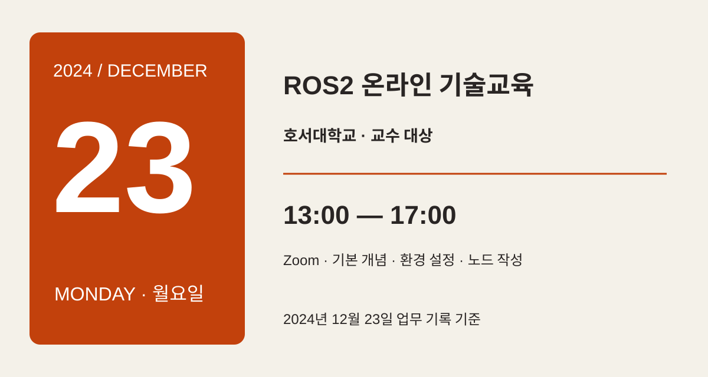
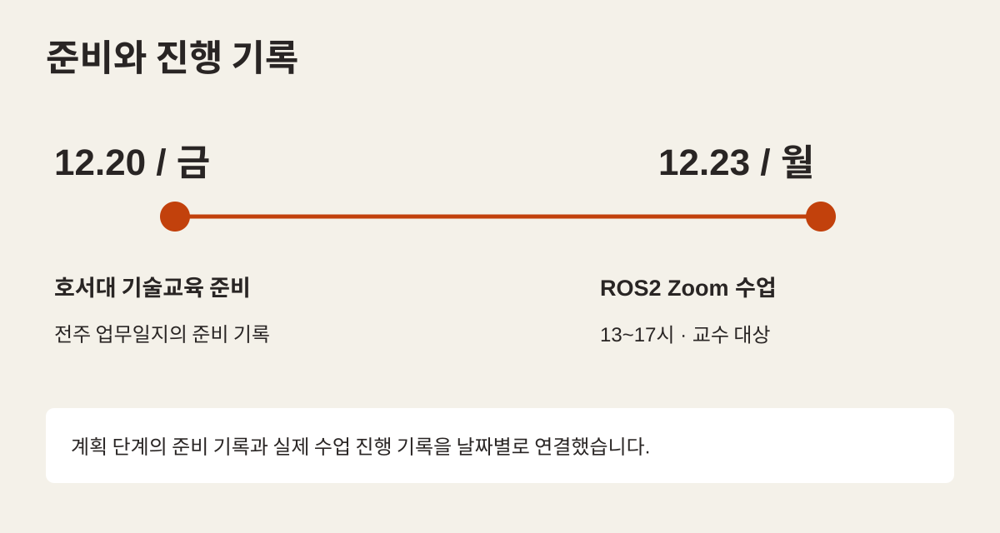
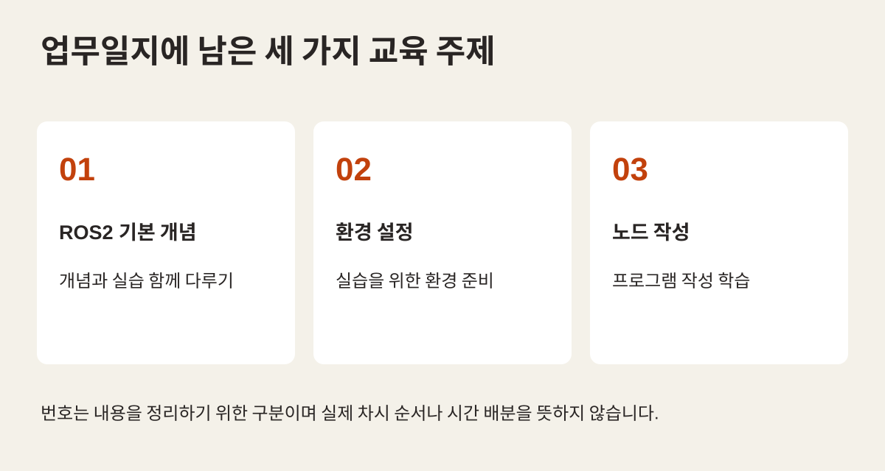

ONLINE EDUCATION / HOSEO 2024
ROS2의 시작을 함께,
네 시간의 온라인 기술교육
2024년 12월 23일, 호서대 교수 대상 Zoom 기술교육. 네 시간 동안 다룬 ROS2 기본 개념·환경 설정·노드 작성의 교육 기록입니다.
개념에서 환경 설정,
노드 작성까지
2024년 마지막 주에는 호서대학교 교수 대상 ROS2 기술교육을 온라인으로 진행했습니다. 업무일지에는 기본 개념과 실습, ROS2 환경 설정, 노드 작성 학습이 함께 기록되어 있습니다.
이번 글은 그날의 짧은 교육 기록을 소개합니다. 앞선 장기 교육 사례와 달리 한 차례의 교수 대상 기술교육에 초점을 맞췄습니다.

크게 보기 ↗업무일지에 기록된 날짜·시간·방식·대상을 요약했습니다. 실제 화상회의 화면이나 참석자 사진은 아닙니다.
- 진행 일시
- 2024년 12월 23일 월요일
오후 1시~5시 - 대상과 방식
- 호서대학교 교수 대상
Zoom 온라인 기술교육 - 기록된 내용
- ROS2 기본 개념·환경 설정
노드 작성과 실습
PREPARATION / DECEMBER 2024
교육 준비와 진행 기록
12월 20일 업무일지에는 ‘호서대 기술 교육 준비’가 남아 있습니다. 다음 주 기록에서는 12월 23일 월요일 오후 1시부터 5시까지 Zoom으로 ROS2 수업을 진행한 사실을 확인할 수 있습니다.
실시 기록은 교수 대상 교육이었다고 명시합니다. 따라서 학생 대상 장기 강좌나 다수 교육생의 프로젝트 과정으로 확대하지 않고, 교수 대상 온라인 기술교육 사례로 소개합니다.

크게 보기 ↗12월 20일의 준비 기록과 12월 23일의 실시 기록을 연결했습니다. 준비에 소요된 시간이나 별도 장비 실습의 완료 여부는 기록에서 확인하지 못했습니다.
ROS2 / ONLINE SESSION
개념에서 프로그램 작성으로
그날의 기록은 ROS2의 기본 개념과 실습, 환경 설정과 노드 작성을 학습한 내용으로 요약되어 있습니다. ROS2를 이해하는 단계와 프로그램을 작성하는 단계를 한 수업 안에서 다룬 구성입니다.
기록에는 구체적인 예제 파일, 사용 배포판, 장비 연결 결과가 남아 있지 않습니다. 이에 다른 교육의 코드를 이 수업의 결과물로 가져오지 않고, 확인되는 세 주제를 중심으로 정리했습니다. 더 상세한 코드 기반 실습은 아래의 관련 교육 글에서 별도로 살펴볼 수 있습니다.

크게 보기 ↗실시 기록에 명시된 주제를 재구성했습니다. 특정 운영체제·ROS2 배포판·노드 예제의 사용 여부를 뜻하지 않습니다.
자료와 기록의 범위
출처는 2024년 12월 16~20일과 12월 23~27일의 주간 업무일지입니다. 파일명은 각각 2024_12_23과 2024_12_31이지만, 이 글의 교육일은 본문에 명시된 12월 23일을 따랐습니다. 실시 기록은 PDF와 원문을 대조했습니다.
그림 세 장은 해당 기록을 요약한 설명도입니다. 화상회의 화면·참석자 사진·교육생 산출물이 아니며, 다른 시기의 호서대 특강이나 수업 자료를 이번 교육의 증빙으로 섞지 않았습니다.